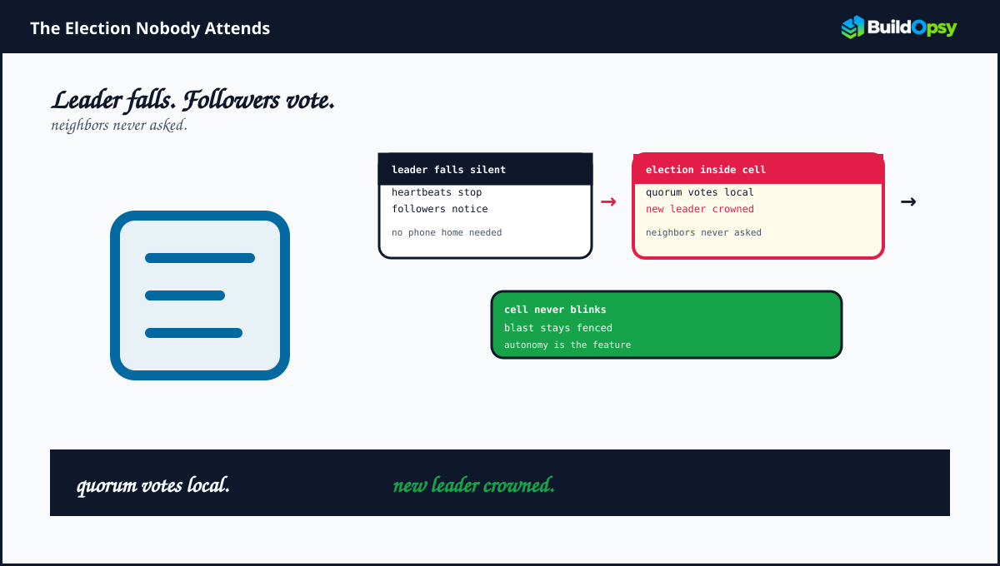
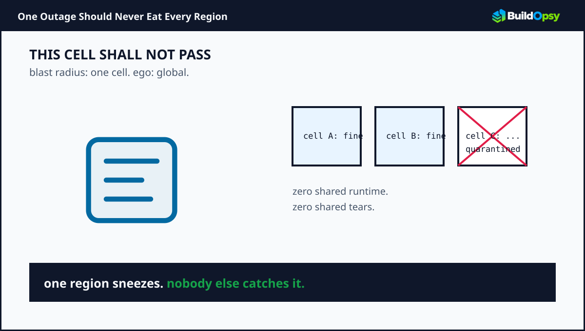

1. The Problem: Global Configuration Outages
Monolithic control planes that propagate configuration changes globally introduce systemic risks. A single corrupted payload or high-frequency polling spike can cascade across all availability zones simultaneously.
Architectural Flaw:
In a unified global database setup, a schema locking issue or bad feature flag deployment impacts 100% of tenants simultaneously, violating basic blast-radius constraints required for Tier-0 cloud services.

2. Proposed Target Architecture
By restructuring the control plane into isolated, self-contained Cells, where each cell operates its own independent state machine, we decouple failures entirely.

graph TD
A[Global Edge Router / API Gateway] -->|Tenant Hash Routing| B[Cell 01 - US-East]
A -->|Tenant Hash Routing| C[Cell 02 - US-West]
A -->|Tenant Hash Routing| D[Cell 03 - EU-Central]
subgraph Cell 01 Isolation Boundary
B --> B1[Go Ingress Proxy]
B1 --> B2[Local Raft Cluster]
B2 --> B3[Local DynamoDB/Scylla]
end
subgraph Cell 02 Isolation Boundary
C --> C1[Go Ingress Proxy]
C1 --> C2[Local Raft Cluster]
C2 --> C3[Local DynamoDB/Scylla]
end
Figure 2: Cell-based routing showing zero shared runtime dependencies between regions.
3. Go Implementation: Partition Hash Router
Below is the core hashing implementation used at the gateway layer to route incoming client requests directly to dedicated cell partitions without shared state calls:
package main
import (
"hash/fnv"
)
type Router struct {
TotalCells int
}
func (r *Router) GetCellID(tenantID string) int {
h := fnv.New32a()
h.Write([]byte(tenantID))
return int(h.Sum32() % uint32(r.TotalCells))
}Operator rule: Cells must fail without calling home. If failover needs the control plane, the control plane is the blast radius.
4. Trade-Off Evaluation
| Vector | Monolithic Global Control Plane | Cell-Based Architecture (Selected) |
|---|---|---|
| Blast Radius | 100% of global traffic | < 5% (Limited to single cell) |
| Operational Complexity | Low (Single DB cluster) | High (Requires automated cell provisioning) |
| Cross-Cell Data Sync | Centralized | Async Event-Driven (EventBridge/Kafka) |